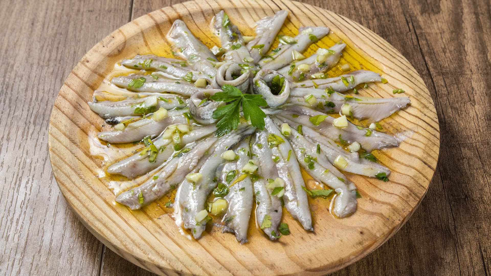

Boquerones en Vinagre

Description
Arguably this is the most ubiquitous tapas in Spain. Doesn’t matter which
region or tapas bar you are on, they will have it, usually over the
refrigerated counter on top of the bar. If you have been in Spain you must
have seen them before. They are this popular not just because they are
very traditional but because they are delicious and one of our favourite
tapas to enjoy with some crisps and a cold beer.
Ingredients
- 1kg fresh anchovies
- 300ml white vinegar
- 100ml water
- 20g salt
- 100ml extra virgin olive oil
- 4 garlic cloves
- 4 springs of flat-leaf parsley
Steps
-
Remove the head and spine of the anchovies with your hands by pulling it
carefully. Place all your anchovies in a large bowl and wash them under
cold running water for 5 minutes until the water runs clean. Make sure
you remove any skins and entrails as you do it.
-
Keep the anchovies in the bowl, feel it with icy water, season with the
salt and let it rest inside the fridge for about 1 hour, again to help
extract any blood and dirt from the anchovies as well as season it
slightly.
-
Remove from the fridge, rinse them with clean water and pat dry them.
Place them in a film envelope in a single layer and freeze them for at
least 24 hours. Remove them from the freezer and let them defrost in the
fridge.
-
Mix the vinegar and the water, line the anchovies in a glass or ceramic
tray and pour the vinegar mixture. Let them pickle in the fridge for
about 6 to 12 hours, depending on their size.
-
ain it from the vinegar and rinse them in some cold water. They should
feel terse and white in colour. Mix the parsley with the garlic and the
olive oil and pour over the anchovies. Let them rest for at least 3
hours on the marinade before enjoying them. I love serving them with
some olives, potato crisps and a cold Spanish beer. Salud!